Día Internacional de la Tiera 22 de abril
- 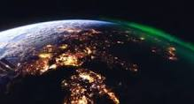
- 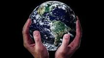
- 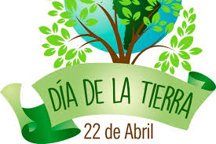
- 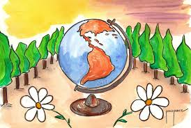


- 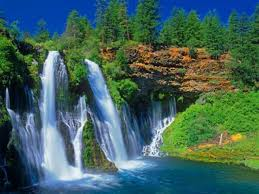
- 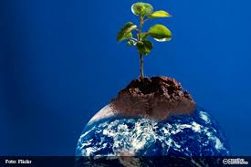
REALIZADO POR:
Martinez Nolasco Jesus Alberto
4-H
Programacion
Submodulo
Desarrola aplicaciones moviles
DOCENTE
Lic.Jose Antonio Gomez Hernandez
4-H
Desarrola aplicaciones moviles
Lic.Jose Antonio Gomez Hernandez
¿PORQUÈ SE CELEBRA?
Celebramos el dia internacional de la madre tierra poara recordar que el planeta y sus ecosistemas nos dan la vida y el de sustento. Con este dia ,asumimos la responsabilidad colectiva, como nos recordaba la declaracion de rio de 1992, de fomentar esta armonia con la naturaleza y la madre tierra. Este dia nos brinda tambien la oprtunidad de concienciar a todos los habitantes del planeta acerca de los problemas que afectan a la tierra y las diferentes formas de vida que en el se desarrollan.
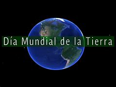
Desde el año de 1962, el Senador y activista Gaylord Nelson venía preparando el espacio para que el tema ambiental hiciera parte de la agenda gubernamental en los Estados Unidos, En ese tiempo, los activistas y grupos ecológicos eran considerados excluidos y no se les daba ninguna importancia.
En 1969 finalmente pudo convocar una gran cantidad de personas con el fin de pedir la inclusión del tema ambiental en la agenda del Congreso de los Estados Unidos.
Después de casi diez años de lucha ante el gobierno, el Senador Gaylord Nelson logró que se estableciera el 22 de abril como Día Mundial de la Tierra en el año de 1970. En esta fecha ocurrió la primera celebración la cual tuvo un impacto tan grande que se congregaron dos mil universidades, mil escuelas (primarias y secundarias), más de veinte millones de personas y centenares de comunidades en diferentes marchas. La presión social tuvo sus logros y el gobierno de los Estados Unidos creó la “Agencia de Protección Ambiental” con una serie de leyes destinadas a la protección del medio ambiente, relacionadas con el aire limpio, el agua limpia y la conservación de especies en vía de extinción. A partir de entonces, cada año en esta fecha, el mundo entero reflexiona y se moviliza por una tierra mejor.

En 1972 se celebró la primera conferencia internacional sobre el medio ambiente. La Cumbre de la Tierra de Estocolmo (celebrada en Estocolmo Suecia), entre el 5 y 16 de junio del mismo año, fue la primera gran conferencia de la ONU sobre discusiones ambientales Internacionales que marcó un punto de cambio en el desarrollo de la política del medio ambiente y poder sensibilizar a los líderes mundiales sobre la magnitud de los problemas ambientales.
Hasta este siglo pocos pensaron que los seres humanos viviendo en una extensión de tierra sin límites (aparentemente) y con grandes extensiones de agua abundante, podrían causar daños irreparables al medio ambiente. Sin embargo, hoy los gobiernos y la gente en general en todo el mundo buscan estrategias y luchan evitando los derrames de petróleo, la contaminación del agua potable, la deforestación, la lluvia ácida y la posibilidad de rápidos cambios climáticos, los cuales causarían dificultades futuras.
En 1975 un grupo internacional de estudio se reunió en Belgrado, Yugoslavia, propuso un marco de referencia mundial para la educación ambiental, que se llamó la “Carta de Belgrado”, la cual afirma que la meta es hacer que la población mundial se concientice y preocupe por el medio ambiente capacitándose para buscar soluciones a los problemas actuales y prevenir problemas nuevos.
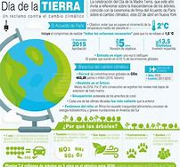
En 1991 varias organizaciones se reunieron a la conmemoración de este día, con el fin de impulsar estrategias que permitieran el cuidado del planeta tierra. El Programa de las Naciones Unidas para el Medio Ambiente (PNUMA), EL Fondo Mundial para la Naturaleza (WWF) y la Unión Internacional para la Conservación de la Naturaleza (UICN), establecieron una estrategia global que llevó por nombre: “Cuidando el Planeta Tierra”.
En la celebración del 2014, el día de la tierra se centró en la defensa de las ciudades verdes, con el objetivo de movilizar a millones de personas para lograr un medio ambiente saludable y sostenible. En la actualidad, más de la mitad de la población mundial vive en las ciudades, por eso la campaña de las ciudades verdes pretende generar un movimiento a nivel mundial durante los próximos dos años para resolver el problema del cambio climático.

El 22 de abril de 2015, afirmó la ONU: “Llego el momento de asumir el liderazgo”, el lema elegido para la celebración en ese año: El Día Mundial de la Madre Tierra, (el 45 aniversario) un momento decisivo para la causa medioambiental.
El 22 de abril de 2016, en su celebración reportan que desde su creación “El día de la Tierra” se extendió a casi 200 países. Millones de personas lo celebran en los cinco continentes.
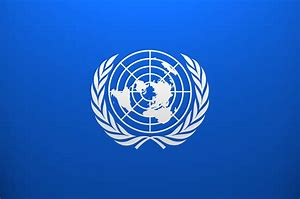
La tierra que habitamos, así titula la Organización de Naciones Unidas (ONU) las actividades para la conmemoración del Día Internacional de la Tierra, este domingo 22 de abril.
La Madre Tierra, como la llaman en muchas culturas, enfrenta quizá los años más difíciles desde sus inicios. Este día, menciona el comunicado de la ONU, será para recordar que el planeta y sus ecosistemas nos dan la vida y el sustento.
Además, es necesario que la humanidad asuma la responsabilidad colectiva de fomentar la armonía con la naturaleza y la Madre Tierra
Desde su formación hasta hoy, la Tierra cumple 4,600 millones de años aproximadamente, mencionan los científicos. En todo este tiempo, el planeta ha sido capaz de regenerarse y tomar la distribución de los continentes hasta como ahora los conocemos. Todo ese recorrido en el tiempo, ha superado una serie de cambios que impactaron en la fauna y flora.
Actualmente, aunque se dan esfuerzos para revertir el cambio climático, desastres naturales provocados por el hombre o bien, parte de la dinámica de la naturaleza, los mismos son pocos para el impacto negativo que algunas actividades del ser humano causan al planeta.
Aunque la población crece, este ritmo no se refleja en muchas especies de fauna y flora, que ven cada año reducir las especies y, algunas ya forman parte de la lista de extinción.
Los mayores problemas que enfrenta la tierra sin lugar a dudas son originados principalmente por la humanidad. Falta de control de las industrias, contaminación, incendios, tala inmoderada, crecimiento de las zonas urbanas y de la población, junto a la poca acción de países que albergan la mayor cantidad de especies en el mundo, son solo algunas de las causas que se reflejan en el mundo.
Un mundo susceptible al cambio climático, al calentamiento global, a fenómenos como la niña y el niño, falta de alimento y del vital líquido.
Uno de los graves problemas en el país son los incendios forestales.
En lo que va del año se han consumido 2,006 hectáreas en 494 incendios forestales y 151 no forestales, según datos de la Coordinadora Nacional para la Reducción de Desastres.
Casi un 80% de los ríos que cruzan el territorio nacional están contaminados. En otras áreas, los pocos nacimientos del vital líquido han llegado a su fin.
Así podemos citar otra larga lista de causas y efectos, sin embargo, en el día a día como ciudadanos, como parte de la población que habita este planeta.Para este 22 de abril se tienen planificadas varias actividades. Algunas dirigidas por instituciones y organizaciones ambientalistas.
Todos podemos apoyar, incluso en la colonia o lugar de trabajo si se tiene un espacio apropiado se puede organizar una siembra de árboles.
Si tiene este propósito de apoyar al planeta, recuerde investigar las especies de árboles. También las condiciones y, mejor si tiene doble objetivo. No ser únicamente para reforestar sino para que proporcione un beneficio a la biodiversidad (alimento o refugio).
8° Dialogo sobre Armonía con la Naturaleza en las Naciones Unidas
El 23 de abril de 2018 se realizó en la sede de las Naciones Unidas en Nueva York, el 8° Diálogo Interactivo sobre Armonía con la Naturaleza, en ocasión de la conmemoración del Día Internacional de la Madre Tierra.
El evento fue convenido por el Presidente de la Asamblea General, Miroslav Lajcak, quien destacó la importancia del Diálogo para intercambiar ideas sobre desarrollo y patrones de producción y consumo sostenibles en armonía con la naturaleza.
Durante la jornada, se discutió sobre cómo los marcos legales y económicos de la Jurisprudencia de la Tierra impactan la implementación de patrones de producción y consumo sostenibles en Armonía con la Naturaleza.
El Diálogo se realizó con el objetivo de inspirar a los ciudadanos y las sociedades a reconsiderar la relación que mantienen con la naturaleza, acorde a la meta 12.8 de los Objetivos de Desarrollo Sostenible con respecto a los patrones de consumo y producción sostenibles.
Mejorar la base ética de la relación entre la especie humana y la Tierra en el contexto del desarrollo sostenible no es solo beneficioso, sino también necesario.
La Asamblea General designa en su resolución A/RES/63/278 el 22 de abril como el Día Internacional de la Madre Tierra, teniendo en cuenta que en muchos países se celebra el día de la Tierra, y con el objetivo de alcanzar un justo equilibrio entre las necesidades económicas, las sociales y las ambientales de las generaciones presentes y futuras, y para promover la armonía con la naturaleza y la Tierra.
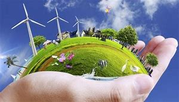
Invita a todos los Estados Miembros, las organizaciones del sistema de las Naciones Unidas, las organizaciones internacionales, regionales y subregionales, la sociedad civil, las organizaciones no gubernamentales y las partes interesadas a observar el Día Internacional de la Madre Tierra y crear conciencia al respecto, según proceda.
La Conferencia de las Naciones Unidas sobre el Medio Humano de 1972 celebrada en Estocolmo sentó las bases de la toma de conciencia mundial sobre la relación deinterdependencia entre los seres humanos, otros seres vivos y nuestro planeta. Asimismo, se estableció el 5 de junio como el Día Mundial del Medio Ambiente y se creó el Programa de las Naciones Unidas para el Medio Ambiente (PNUMA), la agencia de la ONU encargada de establecer la agenda ambiental a nivel global, promover la implementación coherente de la dimensión ambiental del desarrollo sostenible en el sistema de las Naciones Unidas y actuar como un defensor autorizado del medio ambiente.
En 1992, más de 178 países firmaron la Agenda 21, la Declaración de Río sobre el Medio Ambiente y el Desarrollo, y la Declaración de Principios para la Gestión Sostenible de los Bosques en la Conferencia de Naciones Unidas sobre el Medio Ambiente y el Desarrollo (UNCED), que tuvo lugar en Río de Janeiro (Brasil) del 3 y el 14 de junio de 1992.
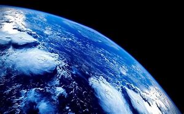
En el año 2005, la Asamblea General declaró 2008 como el Año Internacional del Planeta Tierra para promover la enseñanza de las ciencias de la Tierra para facilitar a la humanidad los instrumentos necesarios para el uso sostenible de los recursos naturales y para construir la infraestructura científica esencial para el desarrollo sostenible.

En 2012 se celebró la Conferencia de las Naciones Unidas sobre el Desarrollo Sostenible, también conocida como Rio+20. Como resultado, se elaboró un documento que contenía medidas y prácticas para implementar un desarrollo sostenible. Además, en Río, los Estados Miembros decidieron emprender un proceso para establecer los Objetivos de Desarrollo Sostenible (ODS), que se basarían en los Objetivos de Desarrollo del Milenio y coincidirían con la Agenda para el desarrollo después de 2015.
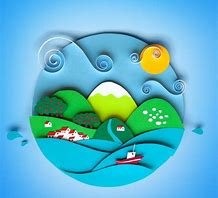